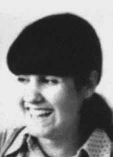

Maria
Lúcia
Petit
da Silva
CIRCUNSTÂNCIAS DA MORTE
O Relatório Arroyo descreve o episódio que teria resultado na morte de Maria Lucia Petit da Silva, em junho de 1972: Em meados de junho, três companheiros, dirigidos por Mundico (Rosalindo Souza), procuraram um elemento de massa, João Coioió, que já tinha ajudado várias vezes os guerrilheiros com comida e informação. Ficou acertado o dia em que ele voltaria de São Geraldo para entregar as encomendas. À noitinha desse dia, aproximaram-se da casa Mundico, Cazuza (Miguel Pereira dos Santos) e Maria (Maria Lúcia Petit), mas perceberam que não havia ninguém.
Cazuza afirmou que ouvira alguém dizendo baixinho: “pega, pega”. Mas os outros dois nada tinham ouvido. Acamparam a uns 200 metros. Durante a noite, ouviram barulho que parecia de tropa de burro chegando na casa. De manhã cedo, ouviram barulho de pilão batendo. Aproximaram-se com cautela, protegendo-se nas árvores. Maria ia na frente. A uns 50 metros da casa, recebeu um tiro e caiu morta. Os outros dois retiraram-se rapidamente. Dez minutos depois, os helicópteros metralhavam as áreas próximas da casa. Alguns elementos de massa disseram, mais tarde, que Maria fora morta com um tiro de espingarda desfechado por Coioió.
O livro Documentos do SNI: Os mortos e Desaparecidos na Guerrilha do Araguaia faz referência a dois documentos produzidos pela Agência Central do Serviço Nacional de Informações que declaram Maria Lúcia Petit da Silva como morta em junho de 1972. Os relatórios militares entregues ao ministro da Justiça Maurício Corrêa, em 1993, também confirmam a morte de Maria Lucia em 16/6/1972.
O diário de Maurício Grabois narra da seguinte forma o evento que resultou na morte de Maria Lucia: Na área de Pau Preto, onde atuava outro grupo, também houve outro caso de traição. Um miserável, apelidado de Coió, fingiu-se amigo dos guerrilheiros. Durante algum tempo ajudou. Depois avisou aos soldados, que prepararam uma emboscada. Apesar das precauções tomadas, quando os combatentes se aproximaram de sua casa foram tiroteados, morrendo então Maria.
The Arroyo Report describes the episode that resulted in the death of Maria Lucia Petit da Silva, in June 1972: In mid-June, three companions, led by Mundico (Rosalindo Souza), looked for a member of the masses, João Coioió, who had already helped the guerrillas with food and information several times. The day was agreed on when he would return from São Geraldo to deliver the orders. In the evening of that day, Cazuza (Miguel Pereira dos Santos) and Maria (Maria Lúcia Petit) approached the Mundico house, but realized that no one was there.
Cazuza stated that he heard someone saying quietly: “take it, take it”. But the other two had heard nothing. They camped about 200 meters away. During the night, they heard noise that sounded like a troop of donkeys arriving at the house. Early in the morning, they heard the sound of a pounding pestle. They approached cautiously, taking cover in the trees. Maria was in front. About 50 meters from the house, she was shot and fell dead. The other two quickly withdrew. Ten minutes later, helicopters strafed the areas close to the house. Some members of the public later said that Maria was killed with a shotgun shot fired by Coioió.
The book SNI Documents: The Dead and Missing in the Araguaia Guerrilla makes reference to two documents produced by the Central Agency of the National Information Service that declare Maria Lúcia Petit da Silva dead in June 1972. The military reports delivered to the Minister of Justice Maurício Corrêa, in 1993, also confirm the death of Maria Lucia on 6/16/1972.
Maurício Grabois's diary narrates the event that resulted in Maria Lucia's death as follows: In the Pau Preto area, where another group operated, there was also another case of betrayal. A miserable man, nicknamed Coió, pretended to be a friend of the guerrillas. For a while it helped. Then he warned the soldiers, who prepared an ambush. Despite the precautions taken, when the fighters approached her house they were shot, leaving Maria dead.
El Informe Arroyo describe el episodio que resultó en la muerte de María Lucia Petit da Silva, en junio de 1972: A mediados de junio, tres compañeros, encabezados por Mundico (Rosalindo Souza), buscaron a un miembro de las masas, João Coioió, que ya había ayudado varias veces a la guerrilla con alimentos e información. Se acordó el día en que regresaría de São Geraldo para entregar los pedidos. En la tarde de ese día, Cazuza (Miguel Pereira dos Santos) y María (Maria Lúcia Petit) se acercaron a la casa de Mundico, pero se dieron cuenta de que no había nadie.
Cazuza afirmó que escuchó a alguien decir en voz baja: “tómalo, tómalo”. Pero los otros dos no habían oído nada. Acamparon a unos 200 metros de distancia. Durante la noche escucharon un ruido que parecía como si una manada de burros llegara a la casa. Temprano en la mañana, escucharon el sonido de un mortero. Se acercaron con cautela, refugiándose entre los árboles. María estaba al frente. A unos 50 metros de la casa recibió un disparo y cayó muerta. Los otros dos se retiraron rápidamente. Diez minutos más tarde, helicópteros bombardearon las zonas cercanas a la casa. Algunos ciudadanos dijeron después que María fue asesinada con un disparo de escopeta disparado por Coioió.
El libro Documentos del SNI: Los muertos y desaparecidos en la guerrilla de Araguaia hace referencia a dos documentos elaborados por la Agencia Central del Servicio Nacional de Información que declaran muerta a María Lúcia Petit da Silva en junio de 1972. Los informes militares entregados al Ministro de Justicia Maurício Corrêa, en 1993, también confirman la muerte de María Lucía el 16/06/1972.
El diario de Maurício Grabois narra el suceso que resultó en la muerte de María Lucía de la siguiente manera: En la zona de Pau Preto, donde operaba otro grupo, también hubo otro caso de traición. Un miserable, apodado Coió, se hacía pasar por amigo de los guerrilleros. Por un tiempo ayudó. Luego avisó a los soldados, quienes prepararon una emboscada. A pesar de las precauciones tomadas, cuando los combatientes se acercaron a su casa fueron baleados, dejando a María muerta.